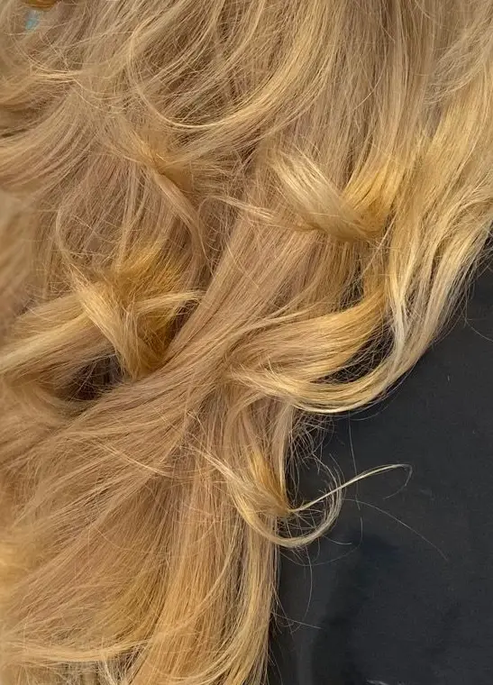

Zwanzig Jahre hinter dem Stuhl.
Fakhria Tokhi — im Laden nennen alle sie Bahar — ist Friseurmeisterin und führt ihren Salon in der Perlacher Straße selbst. Farbe, Schnitt, Hochsteckfrisuren und das komplette Brautstyling: Haar und Make-up aus einer Hand.
Perlacher Straße 2 · München-Giesing

Was hier gemacht wird
Die typgerechte Beratung ist immer inklusive, und bei jeder Farbe steht vorher eine Kopfhautanalyse. Der Ton neben dem Preis ist keine Farbkarte aus dem Katalog: Er ist aus dem Foto genau dieser Arbeit gemessen.

Farbe & Strähnen
Farbe, Tönung, Foliensträhnen und Balayage. Ammoniakfrei für alle, die empfindlich reagieren.
ab 43 € gemessen an dieser Arbeit
Schnitt & Pflege
Waschen, Schneiden, Föhnen — und was das Haar danach wieder in Form hält, von Olaplex bis Keratin.
ab 30 € gemessen an dieser Arbeit
Brautstyling
Haar und Make-up macht dieselbe Person, an einem Termin, im selben Raum. Mit Probetermin.
390–600 € gemessen an dieser ArbeitAlle Preise richten sich nach Haarlänge und Aufwand. Zur vollständigen Preisliste
Arbeiten aus dem Salon
Aufnahmen aus dem Alltag in der Perlacher Straße, gemacht, während die Kundin noch auf dem Stuhl saß. Sie zeigen Struktur, Verlauf und Ansatz — mehr braucht es nicht, um zu sehen, ob jemand Farbe kann.
Brautstyling
Haar und Make-up macht dieselbe Person, an einem Termin, im selben Raum. Das ist der Unterschied zum Hochzeitsmorgen mit drei Terminen an drei Orten — und der Grund, warum das Brautstyling die Arbeit ist, auf die dieser Laden am meisten Wert legt.
390–600 € Hairstyling und Braut-Make-up zusammen

Bahar
Fakhria Tokhi, im Laden alle nennen sie Bahar, ist Friseurmeisterin und arbeitet seit zwanzig Jahren in München. Der Salon in der Perlacher Straße gehört ihr — kein Filialleiter, keine Kette, keine wechselnden Aushilfen.
Was Kundinnen laut der bisherigen Seite besonders schätzen: dass ausführlich beraten wird, bevor die Schere angesetzt wird. Bei Farbbehandlungen gehört eine Kopfhautanalyse dazu. Steht das Ergebnis fest, steht auch der Preis fest.
Zwanzig Jahre hinter dem Stuhl, der Meisterbrief von der Handwerkskammer für München und Oberbayern, und Augenbrauen in Fadentechnik, die nicht jeder Salon in Giesing anbietet.

Perlacher Straße 2
- Öffnungszeiten
-
- Montag 10:00 – 16:00
- Dienstag bis Freitag 09:00 – 19:00
- Samstag 09:00 – 16:00
- Sonntag geschlossen
- Anschrift
-
BaHaar’s Styling Studio
Perlacher Straße 2
81539 München-Giesing